AFTERNOON TEA AT THE BERKELEY LONDON2월에 동생곰왔을때 갈까말까 막판까지 망설이다가 결국 못간곳인데이번에야 말로!!! 를 외치며 동생곰 한국돌아가기 이틀전에 댕겨왔습니다^^버클리호텔 프레타 포르티~The Spring/Summer 2009 collection인기가 좋아서 예약필수(?)라고 들었는데아침에 포트밸로마켓들리구 전화했더니토/일요일에는 예약을 받지 않는다고 하더라구요;;OTL그래도 혹시나해서 마켓둘러본후 오후3시쯤 찾아갔더니 5시반에가능하다구해서 예약걸구 다시 런던 나들이~^^
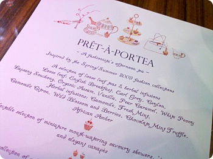
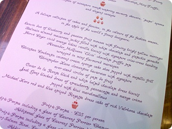
메뉴~
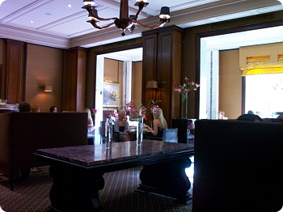
캬라멜 룸 내부대부분의 사람들이 프레타포르티를 주문하더라구요^^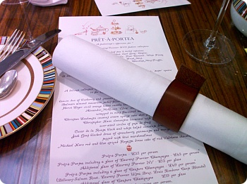
테이블셋팅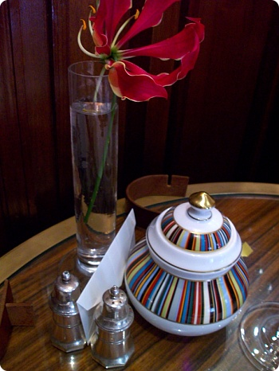
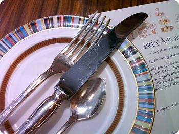
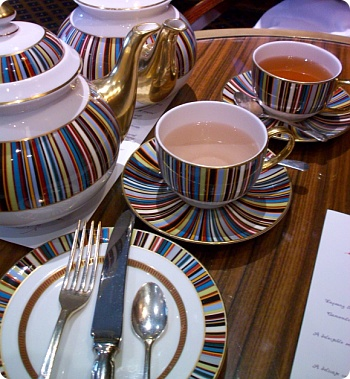
폴스미스 티포트 셋트(이건 정말 들고 튀고싶었....;;)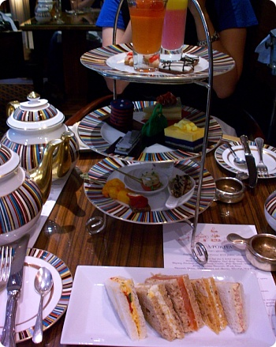
샌드위치 / 케키 / 비스킷 / 카나페 등등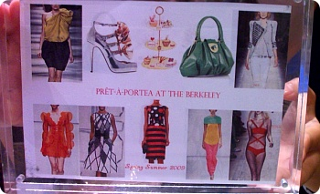
요번에 애프터눈티셋으로 만들어진디자이너의 의상과 가방들서빙후에 매니저가와서 친절하게 설명해줍니다^^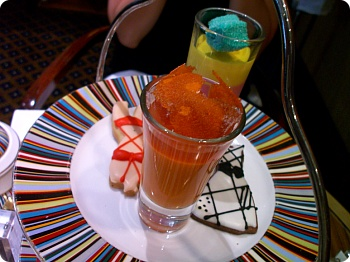
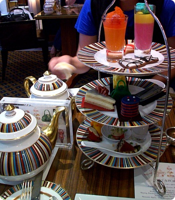
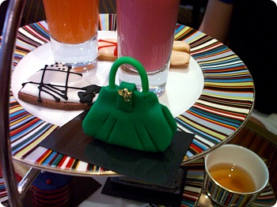
알렉산더맥퀸의 초록색 백이 인상적(곧 나에게 뜯어먹힐 운명(...;;))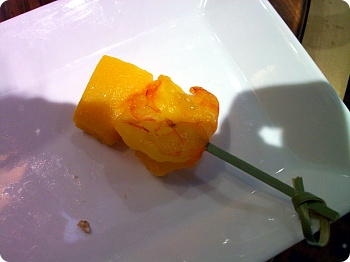
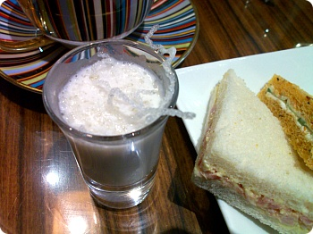
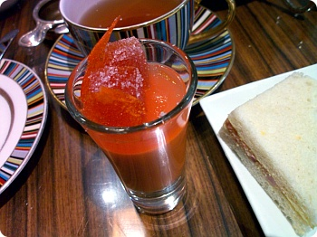
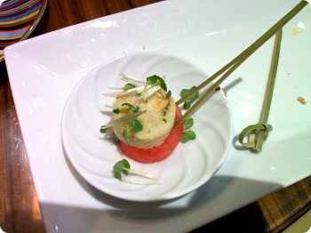
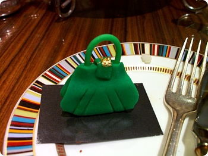
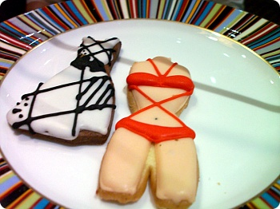
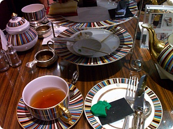
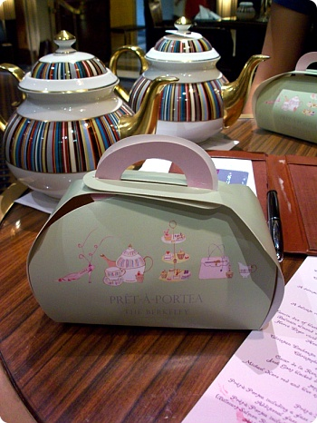
케키는 너무 달아서 다 못먹고 포장(그리고 대부분의 테이블이 케이크를 남겨서 가져가더라구요^^;;정교한 모양과 색을 내기위해 설탕을 사용해서 만든다고 한걸어디서 들은기억이; 가물가물;;; ←;;;;)전체적으로 느므느므 달았어요;;;맛있어서 먹으러 간다기보다는 엄훠 신기해라~이뻐라~를 외치며먹으러가는 애프터눈티셋 이군욤색이 초록/주황/은색빤짝이(←;;)까지 고루고루있다보니 동생곰과"............어쩐지 굉장히 비싼 불량식품 먹는기분이야;;;"라고 했습니다;;^^차는 모험을 싫어하는지라;; 안전(?)하게얼그레이를 시키고 동생곰은 새로운걸 도전해봤는데굉장히 맘에들어하면서 다음날 홍차가게를 뒤졌다능;;맛있었다~라기보다는 잼났어요~>_<아직까지 저의 베스트는 미츠코시본점 지하에 있는포트넘메이슨 이군요~거긴 정말 잼까지 맛나요 ㅜㅜ 흑흑흑(갑자기 또 가고싶어졌다;;;;)